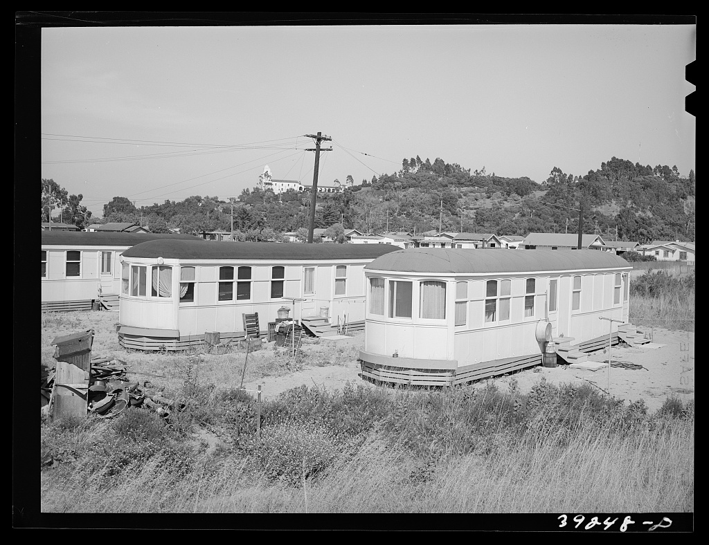

1941: the fastest town in America
In 1940 San Diego was making aircraft as fast as it could hire people to do it. Workers were arriving at about fifteen hundred a week for Consolidated, Ryan and Rohr, and the city's population grew by half in two years. There was nowhere for them to live.

The City had turned down federal housing money in 1939 and 1940. The federal government went ahead anyway: the Lanham Defense Housing Act let Washington build over local objections, and it chose twelve hundred acres of rolling land above Mission Valley. Construction ran from February to November 1941. The first phase — three thousand homes and 750 dormitory units — went up in 259 days. A second phase in 1943 added another 1,845 units. At its wartime peak about sixteen thousand people lived here, in what the San Diego Historical Society called the largest defense housing project in the United States.
One consequence was not planned. Because the housing was federal, it was not governed by the racial covenants that decided who could buy where across most of San Diego at the time. Linda Vista was more mixed from its first week than the city around it — not by anyone's design, but because Washington built it and Washington's rules applied.
1943: the shopping center
A town of sixteen thousand needs somewhere to buy milk. The Linda Vista Shopping Center opened in 1943, designed by the Pasadena architects Karl F. Giberson and Whitney P. Smith, and Eleanor Roosevelt came to dedicate it. It was built on garden-city lines: shops around a landscaped town green, parking pushed out to the perimeter — 261 spaces — and a single scheme of signs and paint across the whole thing. In January 1947 the Southern California chapter of the American Institute of Architects gave it an award.
You will sometimes hear it called the first shopping mall in America. It was not, quite — a center at Broadway and 87th in South Los Angeles beat it by seven years. But it was among the earliest planned suburban shopping centers anywhere in the country, and for thirty years it was the middle of the neighborhood. Most of it was demolished in 1972 and replaced with a strip plaza. People who remember the oak trees on the green have never entirely forgiven that.
1954: the year people bought their houses
The war ended and the houses stayed federal property for nine more years. What happened next is the part worth knowing if you want to understand why there is a town council here at all: residents organized, and pushed to buy the homes themselves rather than watch the whole development sold to commercial owners.
They won. Sales opened on 28 October 1954, at six to seven thousand dollars for a single-family home — five percent down, five percent interest, twenty years. A neighborhood built by federal order became a neighborhood of owners, because the people living in it organized to make that happen.
After 1975: who came next
The University of San Diego opened on the western hill in 1957 and has been part of the landscape ever since. But the larger change came later. From the late 1970s, families arriving from Vietnam after the war settled here in numbers, and after them families from Laos, Cambodia and elsewhere in Southeast Asia — joining Hispanic and Filipino families already long established.
That is the Linda Vista most people recognize now: one of the most genuinely mixed neighborhoods in San Diego, a grocery aisle that reads in four languages, and a street fair every spring that has been running for four decades precisely because there is something worth showing off. Affordable housing built for wartime workers turned out to be affordable housing for everyone who came after.
1942 onward: the library, three times over
The library is the whole of the above in miniature. It arrived late, it arrived undersized, and each time it arrived it was because people here asked for it.
The first Linda Vista Library opened on 30 June 1942 in a converted gardener's cottage near Kelly Street, by what is now the Bayside Community Center. It was four hundred square feet — roughly a two-car garage — serving a town of sixteen thousand. Within a year the city moved a tool shed onto the site to be the children's room, because there was nowhere else to put the children.
The circulation numbers from those years are the part worth sitting with. In 1947 Linda Vista ranked third of the city's thirteen branches in total circulation and first in the entire system for children's books. More children's books went out through a cottage and a tool shed here than through any other library in San Diego. A purpose-built branch followed in 1951. That building is still standing and still full of small children: it is now the Educational Enrichment Systems child development center.
The library we have now, at 2160 Ulric Street, was dedicated on 12 December 1987. Ten thousand square feet, designed by Rob Wellington Quigley — the San Diego architect who went on to design the domed Central Library downtown. It is built around a raised rotunda with clerestory windows and two courtyards that open into the interior. Quigley has described the rotunda in plumbing terms rather than architectural ones: it “acts as an overflow valve,” letting the collection spread out into the middle of the building or pull back into more defined rooms as the branch's needs change. It won an AIA California Council Honor Award in 1989 — described at the time as the highest statewide architectural honor yet given to a San Diego public building — after a state Merit Award, an Orchid from the San Diego AIA chapter and a Panda Award from the City, all in 1988.
Two things about that building are specific to this neighborhood. It was designed around the languages actually spoken here — by the 1980s the branch needed material in Hmong, Lao, Chinese and Cambodian, and in formats that did not fit the fiction-and-nonfiction shelving a standard library plan assumed. And it was designed to be used hard without looking like it expected to be. Quigley has talked about choosing metal and concrete over wood and plaster for a building that takes real wear, while working to keep out the prison feeling that durable materials usually bring with them.
In September 2022, Congresswoman Sara Jacobs secured $500,000 in federal funding for the branch — an expanded outdoor children's area and homework center, and a new early learning patio. Eighty years after the gardener's cottage, the pattern holds.
What is still here to see
- The street plan. The curving roads and the way the houses sit are 1941 federal design, laid out for walking to a bus that took you to the aircraft plants.
- The original houses. Small, single-story, close together. The ones that have not been replaced are the same buildings put up in 259 days.
- The library, at 2160 Ulric Street — Rob Wellington Quigley's 1987 building, and the most award-decorated piece of architecture in the neighborhood — a state Honor Award in 1989 and three more the year before.
- Skateworld, at 6907 Linda Vista Road, roller skating since 1975 in a building from the neighborhood's first years.
- Tecolote Canyon, never built on, which is why Linda Vista has a six-mile trail down one side of it.
Where this comes from
Everything above is drawn from the sources below rather than from memory or local retelling. If you find something wrong, tell us and we will fix it and say what changed.
- Linda Vista history and housing, Clio — construction dates, unit counts, the 1954 sale terms.
- Linda Vista Shopping Center — architects, the 1943 dedication, the 1947 AIA award, the 1972 demolition.
- Boomerang Boom: San Diego 1941–1942, San Diego History Center — the wartime population surge.
- Linda Vista Branch Library, Clio — the 1942 cottage, the tool shed, the 1947 circulation figures, the 1951 branch and the 1987 dedication.
- Linda Vista Library, City of San Diego — square footage, architect, current collections.
- The look of San Diego branch libraries, San Diego Reader, 1995 — Quigley in his own words on the rotunda, the languages the branch had to serve, and designing for wear.
- LV Library Upgrade Funded, Linda Vista Update — the 2022 federal funding.
- Awards, Rob Wellington Quigley Architects — the 1988 and 1989 awards for the building, from the architect's own record.
The articles that used to be on this page
For years this page was a list of three links. They are good links, and they are still here.
- Linda Vista's historic role — San Diego Union-Tribune, 2009.
- “Don't Let Linda Vista Fool You” — San Diego Reader, 2004. The one to read if you only read one.
- Linda Vista stories — the Reader's archive on the neighborhood.